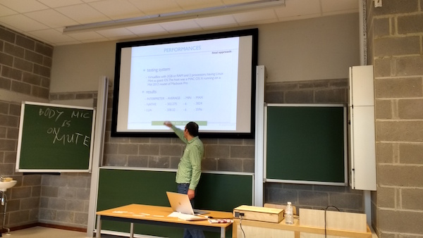
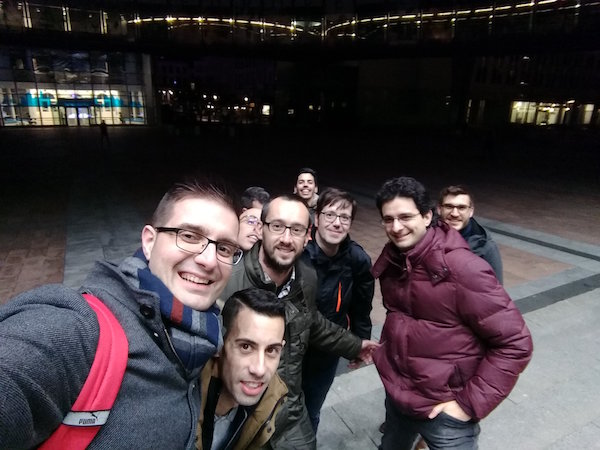

My third FOSDEM is over, this year there was a Real Time Comms dev room in place, one of the best places to keep up to date with all VoIP technologies. Furthermore, in this conference, you can just jump into another track and learn from them, this helps you to be out of your comfort zone. I am so glad to be there and have the chance to have a chat with all open-source community.
First I want to start thanking the RTC track organisers, Saúl Ibarra and Daniel-Constantin Mierla, organise this type of events is a tremendous amount of work.
The day started with an excellent WebRTC introduction, I got in touch with Adapter.js library, Steven advised us to limit the endpoints if we can, and he shared that sometimes you should guess where is the media problem instead find it. The second talk, by Martin, was about real-time protocols and he made a splendid introduction about few tools. Telepathy talk was quite sweet, it is nice to know that all this software still works and new ideas are on the roadmap. IoT XMPP by Daniel was great; I have some doubts about XMPP on the IoT world related to power consumption and bandwidth, but the idea behind XEP-0323 is excellent.
The best VoIP talk, from my point of view, was from Matt Jordan about Asterisk scalability. The concept is the same that Matt argued few times in the past conferences. It was awesome to see new ARI methods for recordings, the publish-subscribe interface (I did not have an idea about that and it fixes many problems). Following Matt, the Basque VoIP mafia took action, Saúl made an introduction to Jitsi WebRTC solutions, Jose Luis Millán about JsSIP, and Mediasoup was explained by Iñaki Baz. I recommend you to view those talks online if you weren't there.
Ring's presentation was great to be out of my comfort zone and to see how other projects solve their problems. Next talk was by the energetic Olle; he showed a very clear state of the art why IPv6 implementation is failing. It was good to hear from first-hand info about new OpenSips; new release looks promising based on Event Routes, plus the CGRates module or RabbitMQ integration. On the other hand, Giovanni from OpenTelecoms made an excellent explanation about Freeswich scalability methods and explained very well the distribution and partition methods. After lunch, Lorenzo gave a talk about Hormer; I got a lot of new ideas, and things like Kibi were mind blowing for me. I thoroughly recommend to follow Lorenzo on Twitter and GitHub; he is full of common-sense with innovative ideas. The last VoIP talk that I attend was given by Daniel about Kemi, I need to say that he introduced something awesome in the next Kamailio version, this interface is going to be essential in the near future.
After my RTC update, my idea for Fosdem was to taste Belgium beers and extend my knowledge of my second skills like DevOps, Python and Postgresql.
I started with GRPC; it is a high-performance RPC framework. I use to work with that on CGRates. It was good to know that Google is using GPRC over HTTP2, so it is much faster and bi-directional streaming can be used.
CoreOS DocOps introduced Kubernetes Operators. From my point of view, all containers/microservers miss the point about the state, with Kubernetes operators this state can be dry or handled. This feature is game-changing in the world of the containers, plus some examples shown during the talk helped the audience to get it. This technology fixes something that I usually work around using Hashicorp tools, in the following months I am going to check k8s operators and deploy.
Finally, I tried to be in a Testing dev room, but it had a massive queue, so I moved into the Postgresql track. Jimmy introduced RDF (Resource Description Framework). He provided some examples, and I think that I would use that in the future. Need to say that I learn something awesome Sqlalchemy stream_results. After that, Gülçin from 2ndquadrant explained all the replication process for fault tolerance; she explained in cleartext the different wal level settings, something that I did not understand at all, but she made an awesome explanation, you should check the video. The last Postgres talk by Gunnar Bluth, introduced to me, two new concepts:
- RTO(recovery time objective): How long took to recover from an incident
- RPO(Recovery point objective): How many lost are you going to have from an incident.
I knew all the technical details of this talk, but need to say that this presentation changed how I am going to think about redundancy in the future, I always looking for issues, but never think about RTO or RPO and never how to measure it.
Fosdem is over. This year I shared this travel with some friends from Vigo, which made myself happy during all the trip. I learnt a lot from them too; I am so glad to share these days with a few python and ruby hackers, a Webkit committer and the Main dev of one of the largest Spain websites. Thanks to you all! Besides it was good to see in person some people from the VoIP community, and meet some people that I didn't meet before.
Finally, some people have problems with the Fosdem Agenda. I need to say that I did not have these problems, but a few weeks ago before Fosdem, I made my plan. Sometimes in this conference is better to see fewer talks but be at the door 10 min before, and not leave some talks in the middle (that it is very unrespectful) or see the agenda in the laptops and check the content of the next speaker. This type of conference should be prepared in advance, if not you are going to be frustrated in the queues.
Thanks to all, and see you next year!